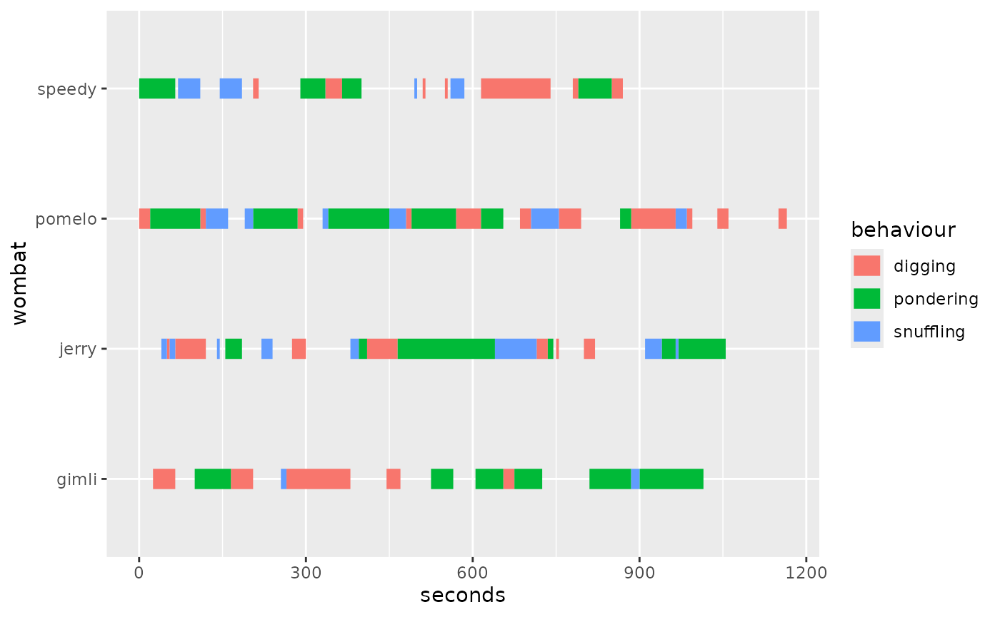
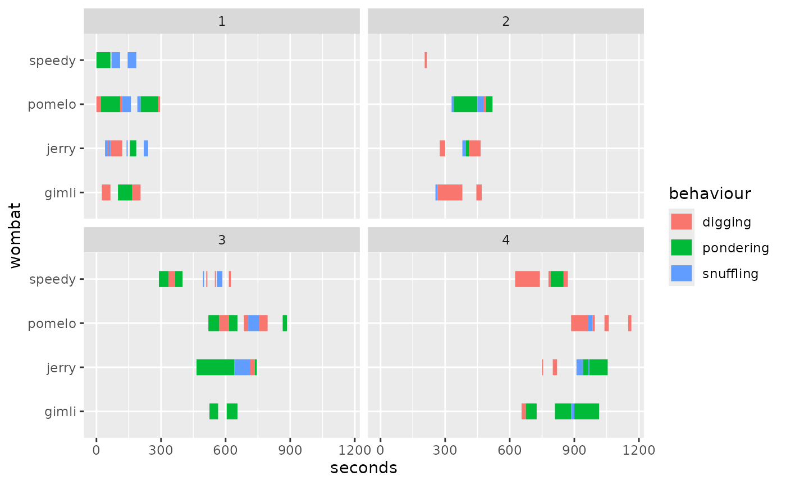
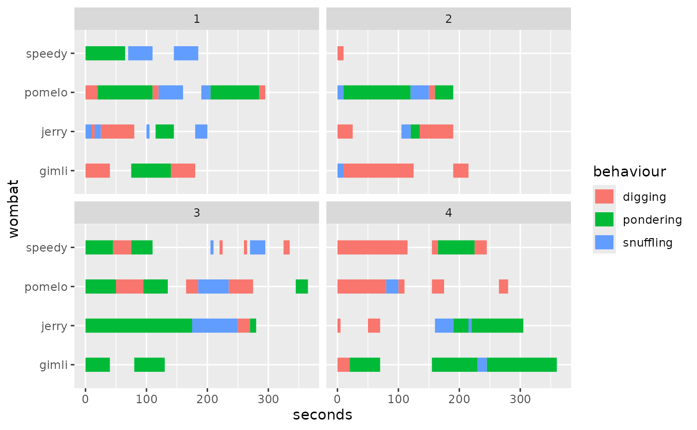
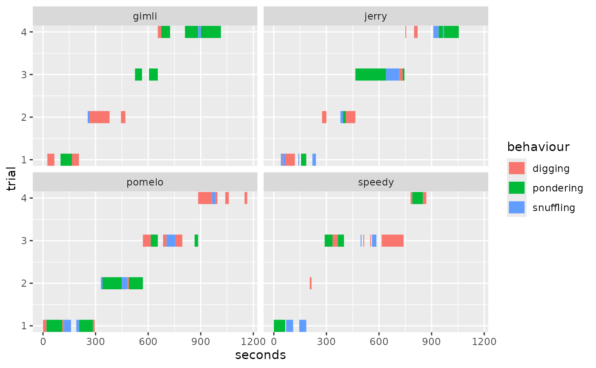
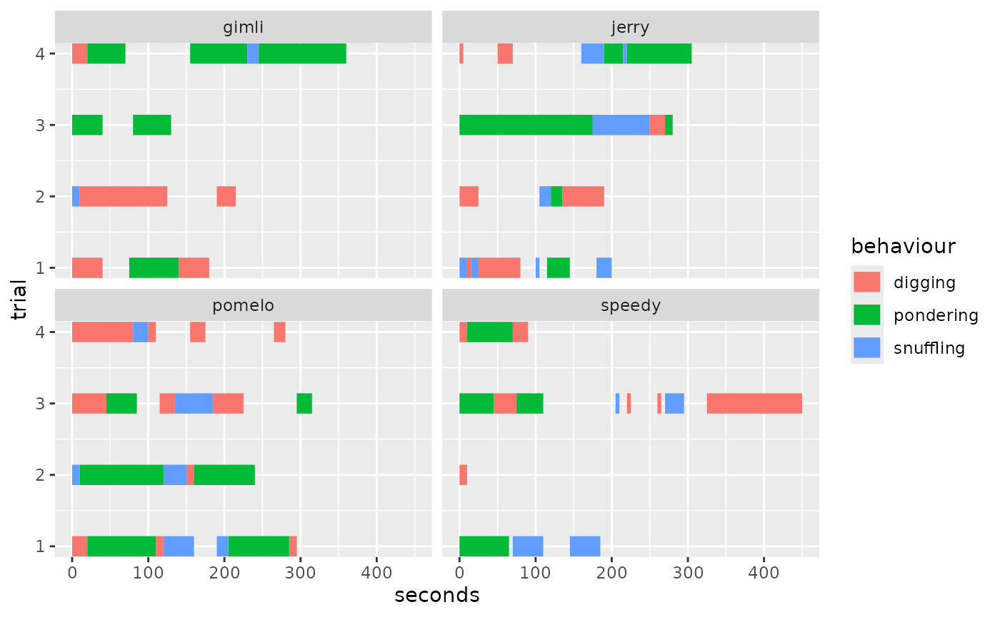

Using Trials
trials.RmdIn many situations, behaviour is collected in trials. For this
reason, we have provided trials in wombats and
the align_trials parameter in
geom_ethogram().
Understanding Trials
Let’s explore the nature of the dataset. This is how it looks like when not visualizing trials.
ggplot(wombats,
aes(x=seconds,
y = wombat,
behaviour = behaviour,
color=behaviour)) +
geom_ethogram()
#> ℹ No observation interval provided, using guessed interval 5.
Here’s when we facet by trial:
ggplot(wombats,
aes(x=seconds,
y = wombat,
behaviour = behaviour,
color = behaviour)) +
geom_ethogram() +
facet_wrap(~trial)
#> ℹ No observation interval provided, using guessed interval 5.
#> ℹ No observation interval provided, using guessed interval 5.
#> ℹ No observation interval provided, using guessed interval 5.
#> ℹ No observation interval provided, using guessed interval 5.
We can now see the issue: the trials were collected with a continuous
clock and we would like to align them to common time (i.e., have all
trials start at zero). This is when align_trials comes
handy:
ggplot(wombats,
aes(x=seconds,
y = wombat,
behaviour = behaviour,
color = behaviour)) +
geom_ethogram(align_trials=TRUE) +
facet_wrap(~trial)
#> ℹ No observation interval provided, using guessed interval 5.
#> ℹ No observation interval provided, using guessed interval 5.
#> ℹ No observation interval provided, using guessed interval 5.
#> ℹ No observation interval provided, using guessed interval 5.
Here’s an another example. Let’s say we wanted to facet by
wombat and have trial be on the y
axis instead.
ggplot(wombats,
aes(x=seconds,
y = trial,
behaviour = behaviour,
color = behaviour)) +
geom_ethogram() +
facet_wrap(~wombat)
#> ℹ No observation interval provided, using guessed interval 5.
#> ℹ No observation interval provided, using guessed interval 5.
#> ℹ No observation interval provided, using guessed interval 5.
#> ℹ No observation interval provided, using guessed interval 5.
We can easily align trials again usingalign_trials=T:
ggplot(wombats,
aes(x=seconds,
y = trial,
behaviour = behaviour,
color = behaviour)) +
geom_ethogram(align_trials = T) +
facet_wrap(~wombat)
#> ℹ No observation interval provided, using guessed interval 5.
#> ℹ No observation interval provided, using guessed interval 5.
#> ℹ No observation interval provided, using guessed interval 5.
#> ℹ No observation interval provided, using guessed interval 5.
Summary
In this article, we have covered basic functionality of aligning
trials by using the align_trials argument.
Session Info
sessioninfo::session_info()
#> ─ Session info ───────────────────────────────────────────────────────────────
#> setting value
#> version R version 4.5.2 (2025-10-31)
#> os Ubuntu 24.04.3 LTS
#> system x86_64, linux-gnu
#> ui X11
#> language en
#> collate C.UTF-8
#> ctype C.UTF-8
#> tz UTC
#> date 2026-01-29
#> pandoc 3.1.11 @ /opt/hostedtoolcache/pandoc/3.1.11/x64/ (via rmarkdown)
#> quarto NA
#>
#> ─ Packages ───────────────────────────────────────────────────────────────────
#> package * version date (UTC) lib source
#> assertthat 0.2.1 2019-03-21 [1] RSPM
#> bslib 0.10.0 2026-01-26 [1] RSPM
#> cachem 1.1.0 2024-05-16 [1] RSPM
#> cli 3.6.5 2025-04-23 [1] RSPM
#> desc 1.4.3 2023-12-10 [1] RSPM
#> digest 0.6.39 2025-11-19 [1] RSPM
#> dplyr 1.1.4 2023-11-17 [1] RSPM
#> evaluate 1.0.5 2025-08-27 [1] RSPM
#> farver 2.1.2 2024-05-13 [1] RSPM
#> fastmap 1.2.0 2024-05-15 [1] RSPM
#> fs 1.6.6 2025-04-12 [1] RSPM
#> generics 0.1.4 2025-05-09 [1] RSPM
#> ggethos * 0.0.1 2026-01-29 [1] local
#> ggplot2 * 4.0.1 2025-11-14 [1] RSPM
#> glue 1.8.0 2024-09-30 [1] RSPM
#> gtable 0.3.6 2024-10-25 [1] RSPM
#> htmltools 0.5.9 2025-12-04 [1] RSPM
#> jquerylib 0.1.4 2021-04-26 [1] RSPM
#> jsonlite 2.0.0 2025-03-27 [1] RSPM
#> knitr 1.51 2025-12-20 [1] RSPM
#> labeling 0.4.3 2023-08-29 [1] RSPM
#> lifecycle 1.0.5 2026-01-08 [1] RSPM
#> magrittr 2.0.4 2025-09-12 [1] RSPM
#> pillar 1.11.1 2025-09-17 [1] RSPM
#> pkgconfig 2.0.3 2019-09-22 [1] RSPM
#> pkgdown 2.2.0 2025-11-06 [1] any (@2.2.0)
#> R6 2.6.1 2025-02-15 [1] RSPM
#> ragg 1.5.0 2025-09-02 [1] RSPM
#> RColorBrewer 1.1-3 2022-04-03 [1] RSPM
#> rlang 1.1.7 2026-01-09 [1] RSPM
#> rmarkdown 2.30 2025-09-28 [1] RSPM
#> S7 0.2.1 2025-11-14 [1] RSPM
#> sass 0.4.10 2025-04-11 [1] RSPM
#> scales 1.4.0 2025-04-24 [1] RSPM
#> sessioninfo 1.2.3 2025-02-05 [1] any (@1.2.3)
#> systemfonts 1.3.1 2025-10-01 [1] RSPM
#> textshaping 1.0.4 2025-10-10 [1] RSPM
#> tibble 3.3.1 2026-01-11 [1] RSPM
#> tidyselect 1.2.1 2024-03-11 [1] RSPM
#> vctrs 0.7.1 2026-01-23 [1] RSPM
#> withr 3.0.2 2024-10-28 [1] RSPM
#> xfun 0.56 2026-01-18 [1] RSPM
#> yaml 2.3.12 2025-12-10 [1] RSPM
#>
#> [1] /home/runner/work/_temp/Library
#> [2] /opt/R/4.5.2/lib/R/site-library
#> [3] /opt/R/4.5.2/lib/R/library
#> * ── Packages attached to the search path.
#>
#> ──────────────────────────────────────────────────────────────────────────────